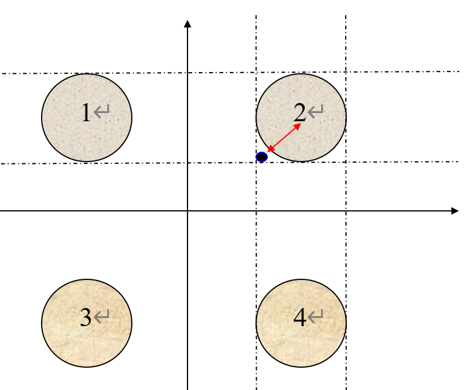

代码复用性和扩展性*
UME 项目组内部教程 · Q07（Q） · 从一道作业题看：数据与逻辑分开、给反复出现的东西一个类型
设计原则 作业题驱动
C++
这一篇从一个真实的作业题开始 —— 它是 C 语言课上的第 4 次作业， 但真正的收获不在答案，而在你打算怎么组织这段代码。
有 4 个圆塔，圆心分别为 (2, 2)、(−2, 2)、(−2, −2)、 (2, −2)，圆半径为 1，见下图。这 4 个塔的高度为 10 m， 塔以外无建筑物。
今输入任一点的坐标，求该点的建筑高度（塔外的高度为零）。
这是一个俯视图：塔顶是平的，可以看成 4 个圆柱； 圆边上点的高度也是 10 米。

题目本身只用到一点简单的数学。但这一篇的重点是： 同一道题，可以写成两种完全不同的代码， 而它们的差别在「老师改了题目」的那一刻才会暴露出来。
1先说数学：一切归结为一个距离
先想清楚要算什么。塔是圆柱，从正上方看就是一个圆面： 圆内的点是塔顶（高 10），圆外是地面（高 0）。
点 P 落在某个塔里 ⟺
P 到这个塔心的距离 ≤ 半径。
四个塔只要有一个满足，高度就是 10；四个都不满足，就是 0。
两点距离公式就是勾股定理：
(cx, cy) 是塔心，(x, y) 是测试点。
把题目里那几个数代进去，可以先手算几个点心里有底：
| 测试点 | 最近塔心 | 距离 | 高度 |
|---|---|---|---|
| (2, 2) | (2, 2) | 0 | 10 —— 塔心 |
| (2, 3) | (2, 2) | 1 | 10 —— 恰好在圆边上 |
| (1, 2) | (2, 2) | 1 | 10 —— 也在圆边上 |
| (1.0001, 2) | (2, 2) | 0.9999 | 10 —— 还在里面 |
| (0, 0) | (2, 2) | 2.8284… | 0 —— 在四塔之间 |
| (1, 0) | (2, −2) | 2.2360… | 0 |
题目说「圆边上点的高度是 10 米」，所以判据里必须带等号。
(2, 3) 与 (1, 2) 这两个点距离都恰好等于 1 ——
写成 < 会把它们判成 0，与题意不符。
另外 (2, 1) 这个点到上下两个塔心 (2, 2)、
(2, −2) 的距离都恰好是 1，两个塔同时「命中」——
这没关系，因为两边的答案都是 10。
2选择题里说「合适的数据类型」
题目里特意写了这一句。它是什么意思？
| 候选 | 能不能用 | 理由 |
|---|---|---|
| int | 不行 | 坐标和距离都可能是小数。用 int 的话
(1.5, 2) 会被截成 (1, 2)，答案直接错 |
| float | 勉强可以 | 精度约 7 位十进制，本题够用 |
| double | 推荐 | 精度约 16 位；C / C++ 的 sqrt() 默认返回
double，用 float 反而多一层转换 |
坐标用 double，高度也可以用 double。
10 写成 10.0，让整个算式都在浮点里走，
不要在中间混进整数除法。
塔的个数是整数，但用 int 还是 size_t 都行 ——
这不是考点。
★3初学者的写法：把数字写死在 main 里
绝大多数人第一遍会这么写 —— 直接把题面里的数字抄进代码：
#include <cstdio> #include <cmath> int main() { double x, y; scanf("%lf %lf", &x, &y); double h = 0.0; // 四个塔，四段几乎一模一样的代码 if (sqrt((x - 2) * (x - 2) + (y - 2) * (y - 2)) <= 1.0) h = 10.0; if (sqrt((x + 2) * (x + 2) + (y - 2) * (y - 2)) <= 1.0) h = 10.0; if (sqrt((x + 2) * (x + 2) + (y + 2) * (y + 2)) <= 1.0) h = 10.0; if (sqrt((x - 2) * (x - 2) + (y + 2) * (y + 2)) <= 1.0) h = 10.0; printf("%.2f\n", h); return 0; }
输入： 2 3 输出： 10.00 输入： 0 0 输出： 0.00
这段代码能得满分。但它把三样东西焊死在了 main 里：
坐标（±2）、半径（1.0）、高度（10.0）。
第二行是把第一行的 2 改成 +2，
第三行是改成两个 +2，第四行改回来一个。
抄四遍、手改符号，这种地方正是最容易写错的地方。
后面会看到：把坐标放进数组之后，这四段会变成一个循环。
4老师改题了
假设你交完作业，老师把题目改一下。下面每一改， 上面那段代码都要重写多少？
| 老师改成 | 要动哪里 | 风险 |
|---|---|---|
| 半径从 1 改成 1.5 | 4 个 1.0 → 1.5 |
改 4 处，漏一个就有一角算错 |
| 圆心挪到 (3,3) (−3,3) (−3,−3) (3,−3) | 4 行里共 8 个数字 | 手改符号，很容易错一个正负号 —— 而错了之后程序照样跑 |
| 塔高改成 25 m | 4 个 10.0 → 25.0 |
相对安全，但仍是 4 处 |
| 改成 9 个塔 | 整段重写 | 四段变九段，符号规律得重新推 |
| 再加一问：求最近的塔是哪个 | 几乎没有可复用的东西 | 要重新写一遍距离计算，而且得返回编号 |
上面每一改都很小，但每一改都要动代码，而且都要重新验算。
更麻烦的是：这些数字是「题目的数据」，不是「程序的逻辑」。 数据和逻辑混在一起写，数据一变，逻辑就得跟着改。
★5把「点」变成一个类型
题目里反复出现一个东西：坐标。塔心有坐标，测试点也有坐标， 两个坐标之间要算距离。
既然如此，为什么不给它一个名字？
把「一起出现、总是一起用」的几个数据，打包成一个有名字的类型。
x 和 y 从来不会单独出现 ——
它们一起表示「一个点」。那么就让「点」成为程序里的一个概念。
struct Point { double x = 0.0; double y = 0.0; // 到另一个点的距离 —— 公式写在它自己家里 double distanceTo(const Point& other) const { double dx = x - other.x; double dy = y - other.y; return std::sqrt(dx * dx + dy * dy); } };
有了它，刚才那串 (x - 2) * (x - 2) + (y - 2) * (y - 2)
就变成一句人话：
sqrt((x - 2) * (x - 2) + (y - 2) * (y - 2)) <= 1.0
p.distanceTo(Point{2, 2}) <= r
距离公式现在写在 Point::distanceTo 里，
全程序只有这一处。
以前是四段 if 里各抄一遍 —— 想改成三维、想加个
「曼哈顿距离」，得改四处。现在改一处。
这就是 Q06 说的「数据只从一个口子进出」： 算法跟着数据走，别在外面散着写。
6把「塔」和「查询」也拆开
Point 解决了「点怎么表示」。接下来还有两件事要分开：
塔是什么、怎么查高度。
#include "Point.h" struct Tower { Point center; // 塔心（俯视图里就是圆心） double radius = 1.0; // 半径 double height = 10.0; // 塔高 // 这个点在不在我的塔顶范围内？ bool covers(const Point& p) const { return p.distanceTo(center) <= radius; // 注意是 <= } };
然后是地图 —— 它只管一堆塔，以及「某个点有多高」：
#include <vector> #include "Tower.h" struct TowerMap { std::vector<Tower> towers; // 有几个塔，就是几个元素 double heightAt(const Point& p) const { for (const Tower& t : towers) { // ← 一个循环，不是四段 if if (t.covers(p)) return t.height; } return 0.0; // 塔外无建筑 } };
heightAt 里一个数字都没有。
没有 ±2、没有 1.0、没有 10.0。
它说的是：「遍历所有塔，谁盖住了这个点就返回谁的高度，都没盖住就是 0」—— 这句话对 4 个塔成立，对 9 个塔也成立，对圆心挪到哪都成立。
逻辑和数据，到这里才真正分开了。
7数据搬出去，main 就只剩流程
#include <cstdio> #include "TowerMap.h" // 题目的数据单独放在这里 —— 改题只改这一段 static TowerMap makeHomeworkMap() { TowerMap map; map.towers = { { { 2.0, 2.0}, 1.0, 10.0 }, { {-2.0, 2.0}, 1.0, 10.0 }, { {-2.0, -2.0}, 1.0, 10.0 }, { { 2.0, -2.0}, 1.0, 10.0 }, }; return map; } int main() { TowerMap map = makeHomeworkMap(); double x, y; scanf("%lf %lf", &x, &y); printf("%.2f\n", map.heightAt({x, y})); return 0; }
输入： 2 3 输出： 10.00 输入： 0 0 输出： 0.00 输入： 2 1 输出： 10.00 ← 两个塔同时命中，结果一样
| 老师改成 | 改哪里 | 改几处 |
|---|---|---|
| 半径 1 → 1.5 | makeHomeworkMap() 里的 1.0 |
4 个数字（也可以只写一个 r 变量） |
| 圆心挪位置 | 同一个函数里的坐标 | 4 行数据 |
| 塔高 25 | 同一处 | 4 个数字 |
| 改成 9 个塔 | 只往数组里多加 5 行 | 判定逻辑一个字不改 |
| 求最近的塔 | 给 TowerMap 加一个函数 |
复用现成的 distanceTo |
再补那一问「求最近的塔」，就只是再加一个方法， 不碰任何已有代码：
// TowerMap 里新增（原来那些一行都不用动） int nearestTowerIndex(const Point& p) const { int best = -1; double bestD = 0.0; for (int i = 0; i < (int)towers.size(); ++i) { double d = p.distanceTo(towers[i].center); // 复用它 if (best < 0 || d < bestD) { best = i; bestD = d; } } return best; }
注意这一段的写法：只加了一个函数，没有修改任何已有代码。 这正是 Q05 讲的开闭原则 —— 新需求靠「加新东西」满足， 而不是回头改老代码。
★8提高扩展性的原则和要点
把上面这一路的变化总结成几条可操作的规则。 它们不只为这道题 —— 换任何题目都成立。
要点一：数据和逻辑分开
heightAt 里没有 2、没有 1.0、
没有 10.0 —— 这是可以检查的硬标准盯着你的核心函数问一句：「这里出现的数字，哪些是算法的一部分， 哪些只是这道题的题面？」
真正的算法常数（比如 2 次方、0.0 比较）
可以留；题面数字（±2、1.0、10.0）
必须搬走。
要点二：给反复出现的东西一个类型
这道题里「一对 x、y」出现了 5 次（4 个塔心 + 1 个测试点）， 这个重复就是信号。
看到「一段公式反复抄」→ 把它变成那个类型上的一个方法
Point 就是这么来的。它带来两件事：
距离公式只有一份；以后要加「三维点」只需改这一个类型。
要点三：用容器代替重复的变量
double cx1 = 2, cy1 = 2; double cx2 = -2, cy2 = 2; double cx3 = -2, cy3 = -2; double cx4 = 2, cy4 = -2; if (dist(x,y,cx1,cy1) <= r) h = H; if (dist(x,y,cx2,cy2) <= r) h = H; if (dist(x,y,cx3,cy3) <= r) h = H; if (dist(x,y,cx4,cy4) <= r) h = H;
std::vector<Tower> towers = {
{{ 2, 2}, 1.0, 10.0},
{{-2, 2}, 1.0, 10.0},
{{-2, -2}, 1.0, 10.0},
{{ 2, -2}, 1.0, 10.0},
};
for (const Tower& t : towers)
if (t.covers(p)) return t.height;
差别不只在「少打几个字」：左边加第 5 个塔要改 5 个地方， 右边只加一行数据。
要点四：每个类型只负责一件事
| 类型 | 它负责什么 | 它不负责什么 |
|---|---|---|
| Point | 表示一个坐标；算到另一点的距离 | 不知道有塔这回事 |
| Tower | 表示一个塔；判断某个点是否被它覆盖 | 不知道一共有几个塔 |
| TowerMap | 保管一堆塔；查询某点的高度 | 不知道题面数字；不知道输入输出 |
| main | 读输入、调 heightAt、打印结果 |
不做任何计算 |
这就是 Q06 的「一个组件一件事」。判据还是那句： 能用一句话说完自己是干什么的，且这句话里没有「并且」。
要点五：想清楚「什么会变」
动笔之前先问：这道题里，哪些东西最可能被改？
对这道题：塔的个数、圆心、半径、高度 —— 都可能变； 而「点到圆心的距离 ≤ 半径就是塔顶」—— 不会变。
于是答案很清楚：把会变的搬出去（数据），把不变的留下来（逻辑）。 换任何题目，这个问法都成立。
要点六：新需求应该靠「加」，不靠「改」
「求最近的塔」那一问就是例子。加一个新函数， 老代码一个字不动 —— 所以老功能不会被碰坏，也不用重测。
只改数据那一段 → 扩展性好；
要动核心逻辑 → 说明数据和逻辑还没分开。
9两种写法摆在一起
| 看什么 | 写死在 main 里 | 拆成类型之后 |
|---|---|---|
| 核心逻辑里的题面数字 | 有（±2、1.0、10.0） |
一个都没有 |
| 距离公式出现几次 | 4 次（各抄一遍） | 1 次 |
| 加第 5 个塔 | 复制一段 if 并手改符号 |
加一行数据 |
| 半径改了 | 改 4 处 | 改数据那一段 |
| 加「最近的塔」 | 重写一遍距离计算 | 加一个函数，复用 distanceTo |
| 哪天要算三维 | 4 段全改 | 只改 Point |
| 能不能单独测「距离对不对」 | 不能，它埋在 main 里 |
能，直接调 distanceTo |
| 代码行数 | 少 | 多一点 |
如果这道题只交一次、永不再改，写死在 main 里是
完全合理的 —— 更快、更短、也没什么可维护的。
拆成类型是为了「会变」。真实的项目里， 需求永远在变，所以这个投入是值的。
但也要记住上一节那句：别为了拆而拆。 一个只用一次、只有三行的小脚本，不需要四个类。
10一页速查
本题的数学
dist = √( (x − cx)² + (y − cy)² )
四个塔任一命中 → 高度 10；都不命中 → 0
边界带等号（题目说圆边上也是 10 米）
分层结果
| 类型 | 一句话职责 |
|---|---|
| Point | 一个坐标，以及到另一个点的距离 |
| Tower | 一个塔（塔心 + 半径 + 高），以及「我盖住这个点吗」 |
| TowerMap | 一堆塔，以及「这个点有多高」 |
| main | 读入坐标、问一次高度、打印 |
| makeXxxMap() | 题目数据单放一处 —— 改题只改这里 |
提高扩展性的六条
② 反复出现的东西给一个类型 ——「x、y 总一起出现」→ Point
③ 用容器代替重复的变量 —— 4 段 if → 1 个循环
④ 每个类型只负责一件事 —— 一句话说不完就再拆
⑤ 先问「什么会变」 —— 会变的搬出去，不变的留下
⑥ 新需求靠「加」不靠「改」 —— 加函数，别改老代码
写代码时把「这道题的答案」和「这类题的解法」分开。
前者是数据，会变；后者是逻辑，不会变。 混在一起写，改一次题就要重写一遍程序。
- Q06 · 组件化编程与解耦合 —— 本篇的 Point / Tower / TowerMap 就是组件化； 那一篇讲的是它的原理与三条准则。
- Q05 · 开闭原则 —— 「求最近的塔」那一问只加函数、不改老代码， 正是开闭原则的验收标准。
- M06 · 类、结构体
——
struct的语法与成员函数在这里。